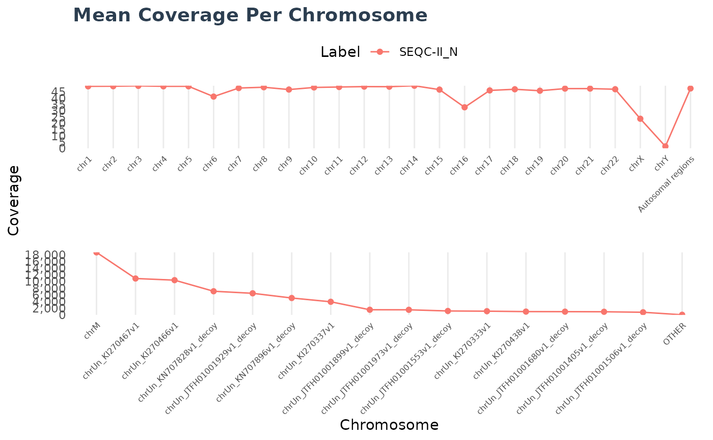

Contains methods for reading and displaying contents of
the wgs_contig_mean_cov_<phenotype>.csv file output from DRAGEN.
This file contains the estimated coverage for all contigs, and an autosomal
estimated coverage.
Super class
dracarys::File -> ContigMeanCovFile
Methods
Method read()
Reads the wgs_contig_mean_cov_<phenotype>.csv file output from DRAGEN.
Method plot()
Plots the wgs_contig_mean_cov_<phenotype>.csv files.
Examples
x1 <- system.file("extdata/wgs/SEQC-II.wgs_contig_mean_cov_normal.csv.gz", package = "dracarys")
x2 <- system.file("extdata/wgs/SEQC-II.wgs_contig_mean_cov_tumor.csv.gz", package = "dracarys")
cc1 <- ContigMeanCovFile$new(x1)
cc2 <- ContigMeanCovFile$new(x2)
read(cc1)
#> # A tibble: 25 × 4
#> label chrom n_bases coverage
#> <chr> <chr> <dbl> <dbl>
#> 1 SEQC-II_N chr1 11391872260 49.4
#> 2 SEQC-II_N chr2 11910292998 49.5
#> 3 SEQC-II_N chr3 9864967562 49.8
#> 4 SEQC-II_N chr4 9380962565 49.4
#> 5 SEQC-II_N chr5 8851326991 49.5
#> 6 SEQC-II_N chr6 7013593668 41.2
#> 7 SEQC-II_N chr7 7641057161 48.1
#> 8 SEQC-II_N chr8 7051795336 48.7
#> 9 SEQC-II_N chr9 5706387709 46.9
#> 10 SEQC-II_N chr10 6468177560 48.5
#> # … with 15 more rows
read(cc2, keep_alt = TRUE)
#> # A tibble: 3,367 × 4
#> label chrom n_bases coverage
#> <chr> <chr> <dbl> <dbl>
#> 1 SEQC-II_T chr1 19825282617 86.0
#> 2 SEQC-II_T chr2 20173660434 83.9
#> 3 SEQC-II_T chr3 17397714315 87.8
#> 4 SEQC-II_T chr4 15471335389 81.5
#> 5 SEQC-II_T chr5 15376687254 85.9
#> 6 SEQC-II_T chr6 13348447303 78.5
#> 7 SEQC-II_T chr7 16991597908 107.
#> 8 SEQC-II_T chr8 13202798183 91.2
#> 9 SEQC-II_T chr9 10085223132 82.8
#> 10 SEQC-II_T chr10 10799872299 81.0
#> # … with 3,357 more rows
plot(cc1)
